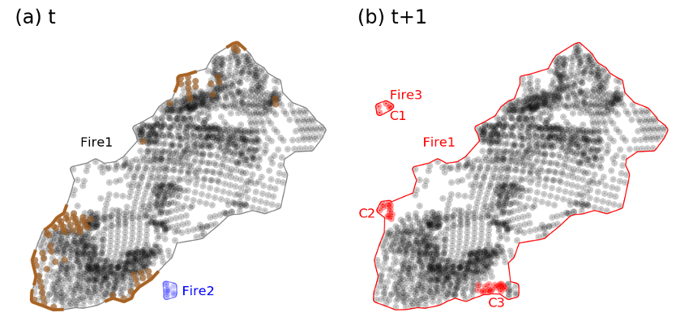

FIRMS
Disclaimer: The VIIRS Modeled Fire Perimeters product is intended to provide situational awareness for ongoing fire events in the US and Canada, not a precise estimate of the fire perimeter for emergency response. This research product estimates individual fire event perimeters and properties every 12 hours; the spatial and temporal resolution of each modeled fire perimeter reflects the characteristics and availability of VIIRS 375 m active fire detections from FIRMS.
VIIRS Modeled Fire Perimeters
The VIIRS Modeled Fire Perimeters product uses the Fire Event Data Suite (FEDS) algorithm (Chen et al., 2022), an alpha shape approach to estimate the perimeter and properties of ongoing fire events every 12 hours, based on Visible Infrared Imaging Radiometer Suite (VIIRS) 375 m active fire detections (hereafter “modeled fire perimeters”).
The FEDS algorithm clusters active fire detections into individual events, estimates the fire perimeter and fire characteristics, and tracks fire growth for each 12-hour time step. The vector data product includes multiple attributes for each modeled perimeter, including the active portion of the fire perimeter and metrics of fire behavior for each 12-hour growth increment. The FEDS algorithm inherits the spatial resolution and geolocation accuracy of the VIIRS 375 m active fire product from the Suomi-NPP and NOAA-20 satellites (see Disclaimer, above) and models the fire perimeter every 12 hours to generate a vector output. The VIIRS Modeled Fire Perimeter data are produced within approximately four hours of each VIIRS overpass for the Continental United States (CONUS) and Canada.
For all fire events, regardless of fire size or duration, the FEDS algorithm provides a “snapshot” of the modeled fire perimeter every 12 hours. For fires that ultimately grow larger than 5 km2, these modeled perimeters and associated attributes are stored in sequence to track the growth and behavior of each large fire event.
The source code used to generate the VIIRS Modeled Fire Perimeter data using the FEDS algorithm is available on GitHub, and an example notebook that demonstrates how to subset, analyze, and visualize the data outside of FIRMS is available on NASA’s VEDA platform. Finally, the VIIRS Modeled Fire Perimeter data based on the FEDS algorithm are also available via OGC API.
The VIIRS Modeled fire Perimeter data are provided by the NASA Earth Information System (EIS) Project. The FEDS algorithm was developed by Yang Chen and colleagues at the University of California-Irvine, NASA’s Goddard Space Flight Center (GSFC), Cardiff University (UK), and Universidad del Rosario (Colombia), as described in a scientific paper published in 2022 (Chen et al., 2022).
FAQS: VIIRS Modeled Fire Perimeter Product
1. What is the VIIRS Modeled Fire Perimeter Product?
A: The VIIRS Modeled Fire Perimeter Product uses the Fire Event Database Suite (FEDS) algorithm (Chen et al., 2022) to cluster VIIRS 375 m active fire detection data into individual fire events and track fire spread and behavior every 12 hours (Figure 1). The FEDS algorithm uses an alpha shape approach to model the fire perimeter, estimate the active portion of the fire perimeter, and quantify metrics of fire behavior for each 12-hour time step. The FEDS algorithm currently uses the 375 m active fire detections from the VIIRS sensors onboard the Suomi-NPP and NOAA-20 satellites to model the fire perimeter.

The VIIRS Modeled Fire Perimeter data based on the FEDS algorithm includes three different types of information about each ongoing fire event in the Continental United States (CONUS) and Canada, updated approximately four hours after each VIIRS overpass: 1) the modeled perimeter of each large fire event, 2) the active portion of the modeled fire perimeter (i.e., the active fire line or “hot edge” of the modeled fire perimeter), and 3) the instantaneous fire radiative power (FRP) from all active fire detections associated with a given fire event during each overpass time, including fire detections at the hot edge and residual flaming or smoldering activity within the modeled fire perimeter (see Figure 1a). By clustering and tracking fire detections into individual fire events, the FEDS algorithm provides a consistent assessment of the change in fire behavior and intensity with each successive VIIRS overpass (nominally at 01:30 and 13:30 local time).
2. What is the source of the VIIRS Modeled Fire Perimeter Data?
A: The VIIRS Modeled Fire Perimeter data based on the FEDS algorithm are provided by the NASA Earth Information System (EIS) Project, which harnesses the full power of NASA’s satellite observations, models, and scientific expertise to deliver information for societal benefit that is open, accessible, and actionable. The FEDS algorithm was developed by Yang Chen and colleagues at the University of California-Irvine, NASA’s Goddard Space Flight Center (GSFC), Cardiff University (UK), and Universidad del Rosario (Colombia), as described in a scientific paper published in 2022 (Chen et al., 2022).
3. What is the temporal frequency of the VIIRS Modeled FIre Perimeter Data?
A: The VIIRS Modeled Fire Perimeter data based on the FEDS algorithm are updated twice per day using the VIIRS 375 m active fire information from the morning (01:30) and afternoon (13:30) Suomi-NPP and NOAA-20 satellite overpasses over each fire event. The vector output from the FEDS algorithm is produced within approximately 4 hours following the availability of VIIRS 375 m active fire data in FIRMS.
4. What is the spatial resolution of the VIIRS Modeled Fire Perimeter data?
A: Although the vector data in the VIIRS Modeled Fire Perimeter product has no defined spatial resolution, the product is derived from the VIIRS 375 m active fire detections, and therefore reflects the spatial resolution and geolocation accuracy of those products from the Suomi-NPP and NOAA-20 satellites. The FEDS algorithm uses an alpha hull approach to cluster new active fire detections and model the updated fire perimeter every 12 hours. The alpha hull approach groups individual fire detection points from the VIIRS sensors on two satellite platforms to model their combined spatial extent and distribution at each 12-hour time step. Compared to a convex hull, the alpha hull approach is better able to capture irregular shapes of active fire events and changes in shape over time. See Chen et al., (2022) for additional details.
5. Why are the VIIRS Modeled Fire Perimeter Data based on the FEDS algorithm only available for the Continental United States (CONUS) and Canada?
A: The FEDS algorithm was originally developed and tested for large fires in California (Chen et al., (2022)). The EIS Fire team has scaled the production of the fire event tracking approach to cover CONUS and Canada, with data available via OGC API. Data for additional regions, including Alaska and Hawaii, will be released through FIRMS when available.
6. What is the temporal extent of VIIRS Modeled Fire Perimeter data in FIRMS?
A: The VIIRS Modeled Fire Perimeter data based on the FEDS algorithm are currently available through FIRMS beginning January 1, 2024. Archive data for prior years is available via OGC API. This example notebook demonstrates how to subset, analyze, and visualize these data outside of FIRMS.
7. What validation of the VIIRS Modeled Fire Perimeter data has been performed?
A: Chen et al., (2022) provide a rigorous validation of the FEDS algorithm for large fire events in California between 2012-2020. The study compared the final FEDS perimeter data to official year-end fire perimeter data from the Fire and Resource Assessment Program (FRAP), established by the California Department of Forestry and Fire Protection. Table 6 in Chen et al. (2022) summarizes the comparison between FEDS and FRAP data for large fires in California in 2018 using standard comparison metrics (e.g., Accuracy, Precision, Recall, and Intersection Over Union). Overall, the FEDS data compare favorably to the FRAP year-end data. Validation for other regions and other fire types is an area of ongoing research by the EIS Fire Project team, and updates from these ongoing studies will be added, as available.
8. How does the VIIRS Modeled Fire Perimeter Data product differ from the USA Fire Perimeter layers in FIRMS?
A: The VIIRS Modeled Fire Perimeter Data product provides situational awareness for large fire events in CONUS and Canada every 12 hours, based on the FEDS algorithm and available 375 m VIIRS active fire detection data from Suomi-NPP and NOAA-20. The modeled perimeter is an estimate of the fire-affected area, active portion of the fire perimeter, and metrics of fire behavior. The VIIRS Modeled Fire Perimeter data also provides a history of modeled large fire growth every 12 hours for all fire events detected by VIIRS in CONUS and Canada. By contrast, the USA Fire Perimeter layer is the most recent official incident perimeter data. Official incident data provide a more precise estimate of the perimeter of large fire events in the US than the VIIRS Modeled Fire Perimeter data. The USA Fire Perimeter layer is updated periodically with new official incident perimeter data.
9. What are the attributes of the VIIRS Modeled Fire Perimeter data based on the FEDS algorithm?
| Column | Description | Type/Unit | Displayed on FIRMS |
|---|---|---|---|
| fireid | Fire ID. Unique for each fire. Matches fireid. | Numeric ID | |
| pixden | Pixel density, the number of pixels divided by area of the estimated perimeter. | pixels/km2 | |
| duration | Number of days since first observation of fire. Fires with a single observation have a duration of zero. | Days | |
| flinelen | Length of active fire line, based on new pixels. If no new pixels are detected, flinelen is set to zero. | km | |
| fperim | Length of estimated fire perimeter. | km | |
| farea | Area within estimated fire perimeter. | km2 | |
| n_newpixels | Number of pixels newly detected since last overpass. | pixels | |
| n_pixels | Number of pixel detections in history of fire. | pixels | |
| isactive | Have new fire pixels been detected in the last 5 days? | Boolean | |
| ogc_fid | The ID used by the OGC API to sort perimeters. | Numeric ID | |
| geometry | The shape of the estimated perimeter. | Geometry |
10. What is the rationale for the 5-day threshold on new fire pixels?
A: The FEDS algorithm uses spatial and temporal search criteria to cluster VIIRS 375 m active fire detections into existing or new fire objects. The use of the 5-day threshold to associate new fire detections with an existing fire object reflects the nature of large fire behavior and periodic gaps in active fire detection data. Large fire events often exhibit episodic growth in response to changes in fire weather, suppression activity, and fuels. Periods with less intense fire activity may not generate active fire detections from VIIRS, leading to temporal gaps (12-hour, 24-hour, etc.) in fire detection information. The 5-day threshold allows the FEDS algorithm to connect future fire detections to the same fire object, or event, rather than splitting a large fire into multiple objects. In addition to periods of lower fire intensity, gaps in fire detection can occur due to satellite outages or observing conditions such as clouds that impact the VIIRS fire detection algorithm. The 5-day threshold reduces the influence of these data gaps on the fragmentation of large fire events in the FEDS algorithm output.
11. How can I find more information about the FEDS algorithm, VIIRS Modeled Fire Perimeter data product versions, and related analyses?
A: Additional information about the FEDS algorithm can be found in Chen et al., (2022). The source code used to generate the VIIRS Modeled Fire Perimeter data product is available on GitHub, and an example notebook that demonstrates how to subset, analyze, and visualize the FEDS output outside of FIRMS is available on NASA’s VEDA platform. Finally, the data products from the FEDS algorithm are also available via OGC API.